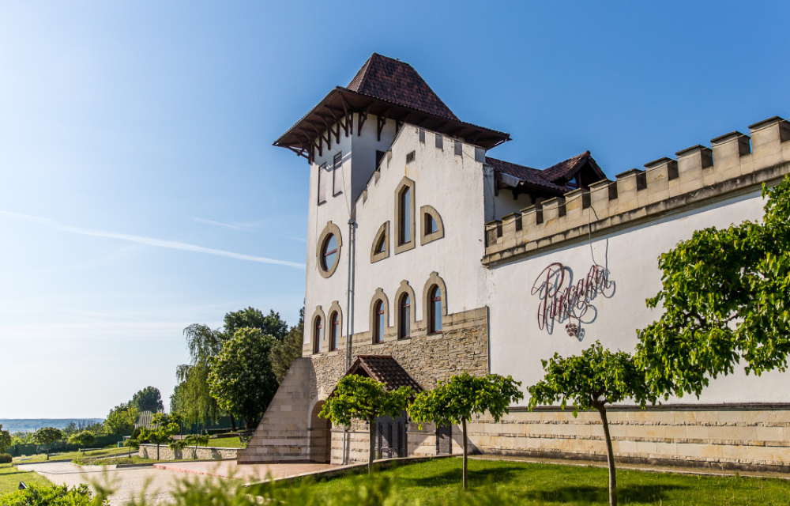

Château Purcari – locul unde confortul întâlnește tradiția
Château Purcari este un domeniu vinicol notabil din Europa de Est. Château-ul este recunoscut la nivel global pentru vinurile sale de calitate superioară, care au câștigat peste 200 de distincții în decursul secolelor la competiții internaționale precum Decanter, Challenge International du Vin, Concours Mondial de Bruxelles, International Wine and Spirit Competition, și au primit apreciere la curtea regală a Marii Britanii.